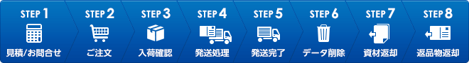

発送までの流れ

1. 見積り／お問い合わせ
ホームページよりの見積りお問い合わせは下記よりお願いします。
返信は３時間以内（当社営業日）にご連絡いたします。
お電話でのお問い合わせは
0561-37-2027
営業時間/9:00～18:00 休日/土日祝祭日
電話でのお問合せ 0561-37-2027 担当：加藤
※DM発送に関する詳しい資料をお送りいたします。
※お見積りを頂いた時点で専任担当者がつきますので後の流れがスムースに運びます。
2. ご注文
見積り検討後注文を頂く場合には、電話、メールにてお客様の専任担当者にお知らせください。
専任担当者より
・無料 信書確認
・注文内容確認
・発送日の打ち合わせ
・個人情報に関する取り決め（御社専用個人情報取決めに対応検討）
・宛名データの受け渡し方法
・入金に関しての確認
宛名データ
インターネット上で情報を暗号化し個人情報やクレジットカード情報といった機密性の高い情報を安全にやり取りできる SSL（Secure Sockets Layer）を導入しています。
「なりすまし」「改ざん」「事後否認」「盗聴」などのリスクを防ぐことができます。
封入物（御社よりの支給物）
・封入物と封筒の信書確認（当社無料）
ゆうメールの場合、信書チェックがあります。信書に該当するとゆうメールでは発送できません。
・宛名データ（当社より既定EXCELファイルを送ります）
・封入物
・封筒
・封入見本
当社にて用意できるもの
・黒一色印刷
・カラー印刷
・封筒印刷
・A4ハガキ印刷
・A4圧着ハガキ印刷
・透明封筒
・紙封筒
・持ち戻り品のEXCELデータ化
・ABテスト
・ABテストコンサル
・ネットでの顧客単価高騰を解決するDM・ニュースレター
・自社ホームページへ呼び込みDM提案
【その他】
・ニュースレター作成紹介
・DM作成アドバイス
・発送に関するお問い合わせ受付
※印刷業者からの当社納入トラブルが増えています。ご注意ください。
3. 入荷確認
・封入物の入荷時に計数機で数えられるものは数えます。
・入荷に関しての確認連絡をメールにて送付します。
・問題がある場合はお客様との対処方法を検討します。
・宛名データ確定と入荷確認後、請求書をお送りします。
4. 発送処理
封入や封閉じ、印刷、宛名ラベル作成し、郵便局（ゆうメール・普通郵便）などお客様指定の運送会社に引き渡します。
お支払いは前金制になりますので発送日前営業日午後3時までに確認ができるように振り込みをお願いします。
振り込みが確認できない場合には発送ができません。
5. 発送完了
発送荷物を運送会社に引渡し当日に発送完了証明書（出荷伝票）をメールに添付しお送りいたします。
・御社名
・日付
・数量
・受付印
を確認ください。
6. データ削除
お預かりしている大切な宛名データは、持ち戻り品返却後14日目に米国国家安全保障局（NSA）で推奨されている
消去方式（各クラスタに乱数を２回書き込んだ後に、0（ゼロ）で１回上書き）で削除します。
またチェックリストに明記し後で確認が取れるようにしています。
7. 資材返却
封入物の残部
・当社にて破棄（無料）
・封入完了後すぐに返却（ヤマト宅急便にて着払い）
・残部と返却発送物が揃ってから返却（ヤマト宅急便にて着払い）
を選んでいただけます。
8. 返品物返却
返品物（住所不明など配達できなかったもの）の返却
・当社にて破棄（無料）
・データ化して返却（有料）
・残部と返却発送物が揃ってから返却（ヤマト宅急便にて着払い）
を選んでいただけます。
※注 ヤマトネコポス便に入る通数
ネコポス便でお返しできる内容物の目安は下記になります。
紙の厚さなど状況により変化しますのでご了承ください。
・A４ハガキ 約８０通
・A４圧着ハガキ 約５０通
・A４透明封筒１点封入 約５９通
・A４透明封筒３点封入 約３０通
・角2紙封筒１点封入 約３３通
・角2紙封筒３点封入 約２２通
・透明長３封筒１点封入（A４用紙三つ折り） 約７８通
・透明長３封筒３点封入（A４用紙三つ折り） 約３４通
・長３紙封筒１点封入（A４用紙三つ折り） 約５６通
・長３紙封筒３点封入（A４用紙三つ折り） 約２９通